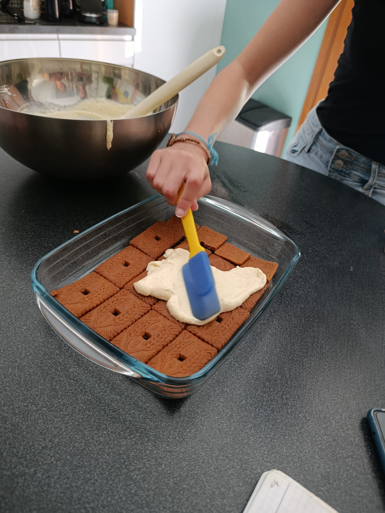
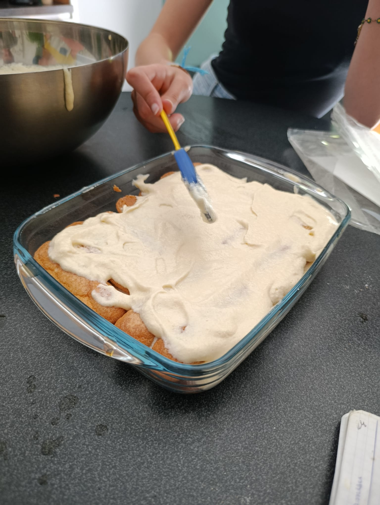
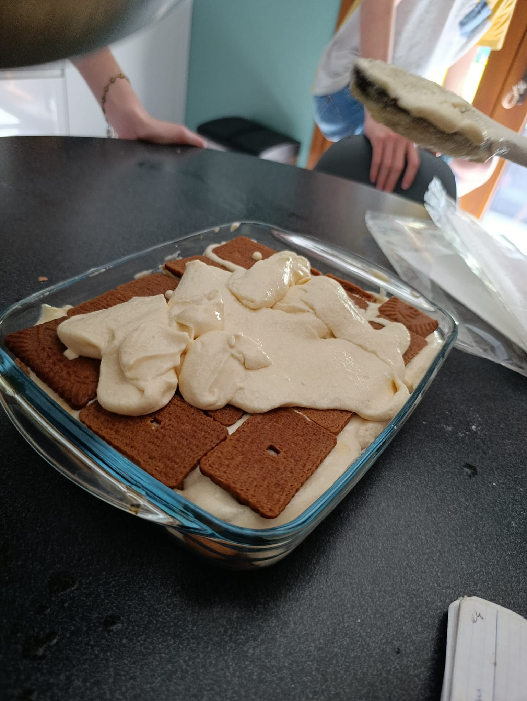

Ingrédients

- 250 g de mascarpone
- 3 œufs
- 80 g de sucre
- 200 g de biscuits (boudoirs ou spéculoos)
- 1 tasse de café
Préparation


Préparer le café avec du sucre.


Séparer les blancs et les jaunes d'œufs.


Ajouter le sucre aux jaunes et mélanger.


Ajouter le mascarpone et mélanger.


Monter les blancs en neige.


Mélanger délicatement les blancs avec la préparation.


Tremper les biscuits dans le café et déposer, puis étalé la crème


Tremper les boudoires dans le café, puis étalé encore la crème


Tremper les biscuits dans le café et déposer, puis terminer avec le reste de crème.